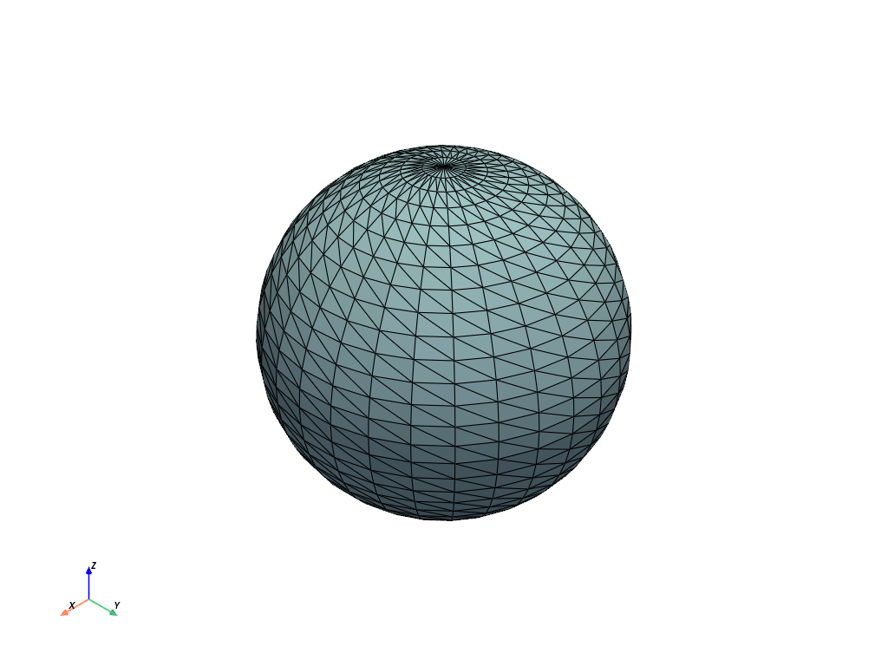
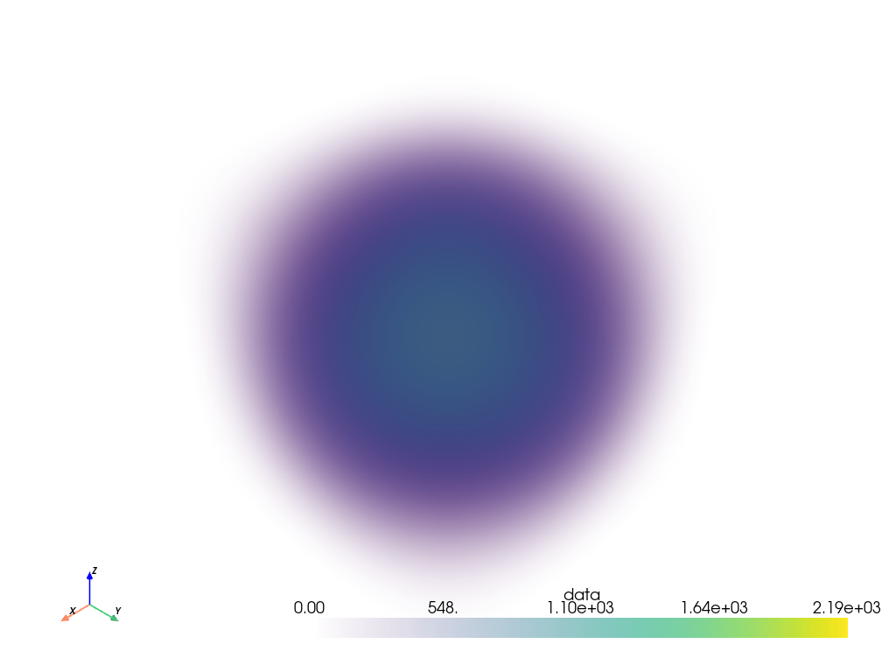

pyvista.PointSet.plot#
- PointSet.plot(off_screen=None, full_screen=None, screenshot=None, interactive=True, cpos=None, window_size=None, show_bounds=False, show_axes=None, notebook=None, background=None, text='', return_img=False, eye_dome_lighting=False, volume=False, parallel_projection=False, jupyter_backend=None, return_viewer=False, return_cpos=False, jupyter_kwargs=None, theme=None, hidden_line_removal=None, anti_aliasing=None, zoom=None, border=False, border_color='k', border_width=2.0, ssao=False, **kwargs)[ソース]#
PyVista，numpy，またはvtkオブジェクトをプロットします．
- パラメータ:
- var_item
pyvista.DataSet サポートされるすべての型については
Plotter.add_meshを参照してください．- off_screenbool,
optional Trueの場合，画面からプロットします．ウィンドウをポップアップしないでスクリーンショットを保存するのに便利です．デフォルトでは，グローバル設定のpyvista.OFF_SCREENになります．- full_screenbool, default:
pyvista.plotting.themes.Theme.full_screen ウィンドウを全画面で開きます．有効な場合，
window_sizeを無視します．- screenshotpython:str か bool, optional
有効にすると，スクリーンショットをファイルに保存します． 参照：
Plotter.screenshot(). デフォルトはFalseです．Trueの場合，スクリーンショットを取得し画像のnumpy配列を返します．- interactivebool, default:
pyvista.plotting.themes.Theme.interactive 図形をパンおよび移動できます．
- cpos
list,optional カメラ位置，焦点，およびビューアップのリスト．
- window_sizesequence, default:
pyvista.plotting.themes.Theme.window_size ピクセルによるウィンドウサイズ．
- show_boundsbool, default:
False Trueの場合，メッシュの境界を表示します．- show_axesbool, default:
pyvista.plotting.themes._AxesConfig.show vtk 軸ウィジェットを表示します．
- notebookbool, default:
pyvista.plotting.themes.Theme.notebook Trueの場合，作成されたプロットはjupyterノートブック内に配置されます．jupyterコンソールがアクティブであると仮定します．- background
ColorLike, default:pyvista.plotting.themes.Theme.background 背景の色．
- text
str,optional プロットの下部にテキストを追加します．
- return_imgbool, default:
False 最後にレンダリングされた画像のnumpy配列を返します．
- eye_dome_lightingbool,
optional Eye-Dome Lighting を有効にします．
- volumebool, default:
False ボリュームレンダリングには，
Plotter.add_volume()メソッドを使用します．- parallel_projectionbool, default:
False 平行投影を有効にします．
- jupyter_backend
str, default:pyvista.plotting.themes.Theme.jupyter_backend Jupyterノートブックが使用するバックエンドをプロットしています．次のいずれかです:
'none': ノートブックに表示しない．'static': 静的図形を表示します．'trame': Display usingtrame.
これは
pyvista.set_jupyter_backend()でグローバルに設定することもできます．- return_viewerbool, default:
False jupyterlabビューア，シーン，または表示オブジェクトをjupyterノートブックでプロットする場合に返します．
- return_cposbool, default:
False 有効にすると，レンダリングウィンドウから最後のカメラ位置を返します． テーマ設定の値がデフォルトです．
- jupyter_kwargs
dict,optional Jupyterノートブックプロットバックエンドのキーワード引数．
- theme
pyvista.plotting.themes.Theme,optional Plot固有のテーマ．
- hidden_line_removalbool, default:
pyvista.plotting.themes.Theme.hidden_line_removal レンダリングエンジンがサポートしている場合，ワイヤーフレームジオメトリは隠し線除去を使用して描画されます．
Plotter.enable_hidden_line_removalを参照してください．- anti_aliasing
str| bool, default:pyvista.plotting.themes.Theme.anti_aliasing アンチエイリアスを有効または無効にする．もし
Trueなら"msaa"を使用します．False の場合，アンチエイリアスを無効にします．文字列の場合，"fxaa"または"ssaa"のいずれかを指定します．- zoom
float,str,optional カメラのズーム．
'tight'または float を指定します． 1より大きい値はズームイン，1より小さい値はズームアウト． 0より大きい値でなければなりません．- borderbool, default:
False 各レンダリングウィンドウの周囲に境界を描きます．
- border_color
ColorLike, default: "k" 文字列，RGBリスト，または16進カラー文字列．例:
color='white'color='w'color=[1.0, 1.0, 1.0]color='#FFFFFF'
- border_width
float, default: 2.0 有効になっている場合のピクセル単位のボーダーの幅 ．
- ssaobool,
optional スクリーンスペース・アンビエント・オクルージョン (SSAO) を有効にします．詳しくは
Plotter.enable_ssao()を参照してください．- **kwargs
dict,optional その他のオプションについては，
pyvista.Plotter.add_mesh()を参照してください．
- var_item
- 戻り値:
- cpos
list カメラポジション，フォーカルポイント，ビューアップのリストです．
return_cpos=Trueまたはデフォルトのグローバルテーマやプロットテーマで設定されている場合にのみ返されます．return_viewer=Truejupyter notebookでreturn_cpos=Trueが設定されている場合には返されません．- image
np.ndarray return_img=Trueまたはscreenshot=Trueが設定されている場合に，最後に表示される画像のNumpy配列です．jupyter notebookの中でreturn_viewer=Trueが設定されている場合には返されません．オプションでアルファ値を含みます．サイズは[ウィンドウの高さxウィンドウの幅x3]テーマが
transparent_background=Falseに設定されている場合．[ウィンドウの高さxウィンドウの幅x4]テーマが
transparent_background=Trueに設定されている場合．
- widget
ipywidgets.Widget return_viewer=True時のIPythonウィジェット．
- cpos
例
単純な球のエッジを表示しながらプロットします．
>>> import pyvista as pv >>> mesh = pv.Sphere() >>> mesh.plot(show_edges=True)
 ボリュームメッシュをプロットします．ImageDataの中心からの距離で色分けします．
volume=Trueが渡されることに注意してください．>>> import numpy as np >>> grid = pv.ImageData( ... dimensions=(32, 32, 32), spacing=(0.5, 0.5, 0.5) ... ) >>> grid['data'] = np.linalg.norm(grid.center - grid.points, axis=1) >>> grid['data'] = np.abs(grid['data'] - grid['data'].max()) ** 3 >>> grid.plot(volume=True)
